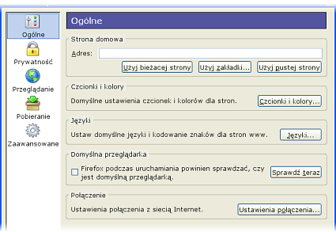
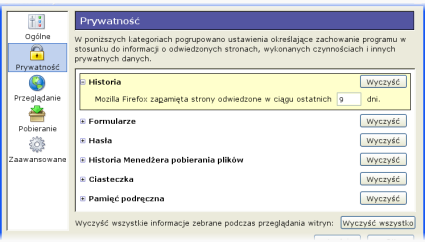
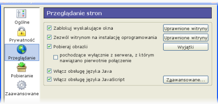
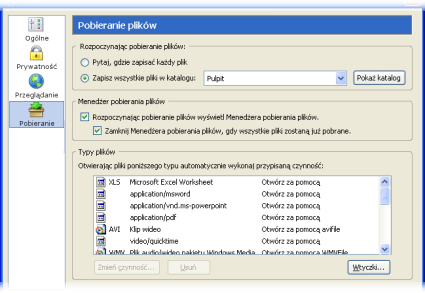
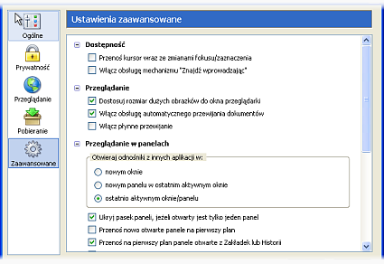

Opcje ogólne
Strona domowa
Tutaj można ustawić stronę startową (lub startową grupę paneli). Taka strona lub grupa paneli jest wyświetlana przy starcie Firefoksa lub po wybraniu przycisku "Strona domowa". Podaj adres strony startowej w polu "Adres".
Kliknij przycisk , by ustawić aktualnie oglądaną stronę jako startową. Jeśli otwarte jest wiele paneli, ten przycisk ustawi całą grupę paneli jako stronę startową.
Można także wybrać stronę startową spośród Zakładek. Kliknij przycisk . Możesz także wybrać folder zakładek.
Jeśli nie chcesz mieć strony startowej, kliknij .
Czcionki i kolory
Kliknij przycisk by ustawić domyślne czcionki i kolory używane przez Firefoksa.
Czcionki:
Zazwyczaj strony wyświetlane są przy użyciu domyślnych czcionek przeglądarki lub przy użyciu czcionek wybranych przez autorów stron www.
Aby zmienić domyślne czcionki:
- Z listy
Czcionki:
wybierz zestaw znaków. Na przykład, aby ustawić czcionki dla kodowania środkowoeuropejskiego, wybierzŚrodkowoeuropejskie
. - Zdecyduj, czy domyślna czcionka proporcjonalna ma być szeryfowa (jak "Times New Roman") czy też bezszeryfowa (jak "Arial"). Następnie ustaw domyślny rozmiar czcionki proporcjonalnej.
- Wybierz domyślne czcionki danego gatunku – szeryfowa, bezszeryfowa, o stałej szerokości. Możesz także ustawić domyślny rozmiar czcionki o stałej szerokości.
Możesz także ustawić rozdzielczość wyświetlania, która domyślnie wynosi 96 dpi.
Na koniec możesz także ustawić minimalny rozmiar czcionki. Opcja ta przydaje się na wielu stronach, które stosują zbyt małe rozmiary czcionek.
Kolory
W tym miejscu można ustawić domyślne kolory tekstu i tła dla stron www, które nie dostarczają tego rodzaju informacji. Kliknij na przycisk z próbką koloru by dokonać wyboru.
Zaznacz to pole, jeśli chcesz korzystać z ustawień systemowych dotyczących kolorów zamiast tych podanych wyżej.
Kolory odnośników
W tym miejscu można ustawić domyślne kolory dla odnośników na stronach www. Kliknij na przycisk z próbką koloru by dokonać wyboru.
Domyślnie odnośniki są podkreślane. Odznacz tą opcję, by przestały być podkreślane. Zauważ jednak, że opcja ta dotyczy tylko tych stron, które nie decydują samodzielnie o podkreślaniu odnośników.
Zawsze używaj ustawień użytkownika dla:
Domyślnie Firefox stosuje czcionki zdefiniowane przez autorów stron www. Włączenie tej opcji wymusi na wszystkich stronach stosowanie domyślnych czcionek zdefiniowanych powyżej.
Domyślnie Firefox stosuje kolory zdefiniowane przez autorów stron www. Włączenie tej opcji wymusi na wszystkich stronach stosowanie domyślnych kolorów zdefiniowanych powyżej.
Domyślna przeglądarka
W systemie Windows (oraz jeśli korzystasz ze środowiska GNOME pod Linuksem – przyp. tłum.) możesz ustawić Firefoksa jako domyślną przeglądarkę po prostu klikając przycisk . Dzięki temu Firefox będzie zawsze otwierany, kiedy inne aplikacje próbują wyświetlić otworzyć stronę www lub lokalny plik HTML.
Opcja ta może nie być dostępna w Mac OS X.
Połączenie
Wiele instytucji blokuje dostęp z Internetu do wnętrza swojej sieci. Zabezpiecza to przed nieautoryzowanym dostępem do poufnych informacji. Jedną z metod takich zabezpieczeń jest firewall (ang. "ściana ognia").
Jeśli Twoja instytucja korzysta z firewalla, przeglądarka prawdopodobnie musi łączyć się z Internetem poprzez tzw. serwer proxy. Serwer taki kontroluje przepływ informacji, zabezpieczając przed wtargnięciem intruzów do wenątrz lokalnej sieci.
Konfiguracja proxy do połączenia z Internetem
To domyślne ustawienie. Należy je wybrać, jeśli nie korzysta się z serwerów proxy.
Wybierz tę Opcje, jeśli chcesz ręcznie skonfigurować proxy. Spytaj administratora o nazwy i numery portów serwerów proxy dla każdej usługi sieciowej i wpisz te informacje do odpowiednich pól w tej sekcji.
Jeśli w Twojej sieci istnieje plik konfiguracyjny proxy, poproś administratora o jego adres URL i podaj go w tym polu. Wybierz by pobrać ustawienia.
Prywatność
Panel "Prywatność" zawiera opcje związane z zabezpieczeniem Twojej prywatności. Informacje o Twojej aktywności – np. jakie strony odwiedzałeś, są tutaj przechowywane. W każdej chwili możesz kliknąć przycisk w danej sekcji, aby wyczyścić te informacje. Możesz także usunąć wszystkie informacje zebrane podczas korzystania z przeglądarki klikając . Pojawi się okienko z żądaniem potwierdzenia tej czynności.
Aby wyświetlić szczegóły danej sekcji, rozwiń ją klikając mały symbol obok jej nazwy (lub samą jej nazwę – przyp. tłum.). Na obrazku powyżej rozwinięta jest sekcja Historia.
Historia
Można tutaj ustawić czas przechowywania informacji o odwiedzonych stronach. Domyślnie Firefox pamięta te informacje przez dziewięć dni.
Formularze
Firefox zapamiętuje wartości wprowadzone przez Ciebie w polach formularzy. Przy kolejnych formularzach sugeruje skorzystanie z poprzednio wprowadzonych informacji. Aby wyłączyć tę możliwość, odznacz tą Opcje.
Hasła
Firefox może zapamiętywać hasła wprowadzane w formularzach na stronach www, dzięki czemu łatwiej będzie Ci się logować na różne witryny. Możesz przejrzeć zapisane hasła (oraz zarządzać nimi) klikając przycisk . Aby wyłączyć pamiętanie haseł, odznacz tę opcję.
Historia Menedżera pobierania plików
Menedżer pobierania plików (otwierany poprzez wciśnięcie Ctrl+Y lub wybranie opcji Menedżer pobierania plików z menu Narzędzia) przechowuje historię pobranych plików. Naciśnij przycisk w tym panelu, by usunąć wszystkie informacje o dotychczas pobranych plikach. W tej sekcji można także zdecydować o tym, czy lista ta ma być czyszczona ręcznie, automatycznie po zamknięciu Firefoksa lub po zakończeniu pobierania.
Opcje dotyczące samego procesu pobierania plików znajdują się w sekcji Pobieranie.
Ciasteczka
Ciasteczko (ang. "cookie") to plik utworzony przez witrynę www, przechowujący na Twoim komputerze informacje takie jak np. preferencje dotyczące danej strony. Przykładowo, ta witryna przechowuje w ciasteczku wybraną przez Ciebie wygląd.
Aby wyświetlić przechowywane ciasteczka kliknij przycisk . Natomiast aby zezwolić lub zabronić stronom przechowywania ciasteczek niezależnie od ustawień globalnych, kliknij przycisk .
Domyślnie obsługa ciasteczek jest włączona. Odznacz tę opcję, aby ją zablokować. Pamiętaj jednak, że część stron może nie działać prawidłowo, kiedy obsługa ciasteczek jest wyłączona.
Wybranie tej opcji ograniczy stosowanie ciasteczek tylko do witryny, z którą nawiązano pierwotne połączenie, co znaczy, że żadne ciasteczko z innego serwera nie zostanie dopuszczone.
Możesz zdecydować, jak długo Firefox ma przechowywać ciasteczka:
- aż wygasną
To jest domyślne ustawienie. Ciasteczka są przechowywane tak długo, jak życzy sobie tego dana witryna.
- do końca sesji
Ciasteczka zostaną usunięte przy zamykaniu Firefoksa.
- pytaj każdorazowo
Wybierz tą opcję, jeśli chcesz mieć pełną kontrolę nad ciasteczkami. Firefox za każdym razem, gdy witryna będzie próbowała zapisać ciasteczko, poprosi Cię o potwierdzenie.
Pamięć podręczna
Oglądane strony przechowywane są w specjalnym folderze pamięci podręcznej, dzięki czemu szybciej ładują się przy kolejnych wizytach. W tej sekcji możesz podać, ile maksymalnie miejsca ma zajmować folder pamięci podręcznej.
Możesz także wyczyścić aktualną zawartość pamięci podręcznej klikając przycisk .
Ponadto, możesz także zmienić folder pamięci podręcznej oraz rozmiar pamięci podręcznej w pamięci RAM.
Przeglądanie
Firefox domyślnie blokuje denerwujące wyskakujące okienka na stronach www. Odznaczenie tej opcji zwolni blokadę wyskakujących okienek.
Niektóre strony stosują wyskakujące okienka w dobrych celach. Dlatego też funkcja blokady wyskakujących okienek posiada mechanizm "białej listy" witryn, którym użytkownik zezwolił na otwieranie okienek wyskakujących. Aby dodać witrynę do takiej listy, kliknij , wprowadź jej adres i kliknij .
Aby usunąć witrynę z listy, zaznacz ją na liście i kliknij . Aby całkowicie wyzerować listę, kliknij .
Domyślnie Firefox pozwala niektórym witrynom na instalację rozszerzeń i dodatków do Firefoksa. By przejrzeć lub zmienić listę uprawnionych do tego witryn, kliknij . Jest to mechanizm "białej listy", który działa analogicznie jak ten przy blokadzie wyskakujących okienek, omówionej powyżej.
Domyślnie Firefox wyświetla obrazki na wszystkich witrynach. Odznaczenie tej opcji całkowicie zablokuje obrazki. Jeśli obrazki są pobierane, możesz mimo to zablokować pobieranie ich z konkretnych witryn, klikając przycisk .
Zaznaczenie tej opcji sprawi, że wyświetlane będą wyłącznie obrazki pochodzące z tego samego serwera co plik HTML (strona).
Okno "Wyjątki" zawiera listę wszystkich serwerów, z których Firefox
ma nie pobierać obrazków. Aby zablokować dany serwer (np. z reklamami), kliknij prawym przyciskiem myszy
na obrazku z tego serwera i wybierz Blokuj obrazki z serwera <serwer>
. Aby odblokować
serwer, zaznacz go na liście w oknie "Wyjątki" i kliknij .
Aby odblokować wszystkie witryny (tzn. nie blokować pobierania obrazków z jakiegokolwiek serwera)
kliknij .
Java jest popularnym językiem programowania stworzonym przez firmę Sun Microsystems. Pojedynczy program w Javie może działać na różnych komputerach bez potrzeby tworzenia osobnych wersji na każdy z rodzajów komputerów. Programy takie często bywają częścią stron www (w postaci apletów). Odznacz tą opcję, żeby wyłączyć obsługę języka Java w Firefoksie.
Pamiętaj też, że do działania apletów Javy konieczna jest obecność wtyczki Javy.
JavaScript jest skryptowym językiem programowania powszechnie używanym na stronach www. Programiści stosują JavaScript do zapewnienia większej interaktywności, np. do obsługi formularzy, przycisków, menu, itp. Wyłączenie JavaScriptu spowoduje niepoprawne funkcjonowanie wielu stron (w tym także tej).
Zazwyczaj warto więc mieć włączoną obsługę JavaScriptu. Jednakże jest kilka możliwości, które możesz chcieć wyłączyć. Kliknij przycisk by wyświetlić te ustawienia.
Pozwól skryptom na wykonywanie następujących czynności:
Odznacz tą opcję, by zabronić zmieniania rozmiaru i położenia okien poprzez skrypty.
Odznacz tą opcję by uniemożliwić skryptom zmienianie aktywnego okna (przełączanie okien na pierwszy plan i na dalszy plan).
odznacz tą opcję by uniemożliwić witrynom blokowanie lub podmienanie menu kontekstowego (dostępnego pod prawym przyciskiem myszy).
Odznacz tą opcję, by pasek stanu był zawsze widoczny, także w wyskakujących okienkach.
Odznacz tą opcję, by zabronić ustawiania tekstu na pasku stanu przez skrypty. W ten sposób nigdy nie będzie ukrywany adres odnośnika.
Odznacz tą opcję, by zabronić podmieniania obrazków przez skrypty. Może to spowodować utrudnienia w korzystaniu z niektórych menu nawigacyjnych.
Opcje opisane powyżej to nie wszystko. Możesz także wymusić, by wszystkie wyskakujące okienka można było minimalizować i zmieniać ich rozmiar, oraz żeby pasek menu był zawsze dostępny. Wszystkie te ustawienia znajdziesz na stronie Wskazówki i porady.
Pobieranie
W tym oknie Firefox przechowuje informacje o typach plików (aplikacjach, archiwach, multimediach itd.) oraz o sposobie ich uruchamiania.
Rozpoczynając pobieranie plików:
Gdy zaczniesz ściągać plik, Firefox zapyta się gdzie go chcesz zapisać.
To jest domyślne ustawienie. Firefox może automatycznie zapisywać wszystkie ściągane pliki do jednego katalogu np. Pobrane pliki
. Oczywiście możesz wybrać dowolny katalog, poprzez zaznaczenie z listy wyboru opcji Inny
.
By zobaczyć pobrane pliki (katalog, w którym się znajdują) kliknij przycisk , a domyślny menedżer plików (np. Eksplorator Windows albo Nautilus) go otworzy.
Menedżer pobierania plików
Jeśli ta opcja jest zaznaczona (ustawienie domyślne), przy rozpoczęciu pobierania każdego pliku zostanie wyświetlone okno Menedżera pobierania. W przeciwnym wypadku, okno to nie będzie wyświetlone automatycznie (mimo że plik zostanie pobrany).
Jeśli ta opcja jest zaznaczona, po ukończeniu pobierania plików okno Menedżera pobierania plików zostanie automatycznie zamknięte.
Typy plików
Ta lista zawiera typy plików, które już ściągnąłeś. Możesz wybrać co powinien zrobić Firefox, gdy w przeglądarce otworzysz plik danego typu Wybierz typ pliku, którego akcje chcesz zmienić i kliknij przycisk .
To polecenie wyświetli okienko Zmień czynność
, gdzie możesz wybrać, czy plik ma być otwierany przez odpowiednia aplikację, czy też zapisywany na dysku. Na przykład, jeżeli oglądasz dużo plików multimedialnych, to zamiast pytać cię gdzie ma być plik zapisany, Firefox otworzy go w twoim odtwarzaczu multimedialnym.
Określa, czy dany plik ma być otwierany przez domyślny program, przypisany przez system operacyjny.
Wybierz tę Opcje, jeżeli chcesz użyć innego programu, który obsługuje ten rodzaj plików. W puste pole wpisz lokalizacje danego programu lub kliknij przycisk by zobaczyć drzewo katalogów.
Dzięki tej opcji pliki danego typu będą zapisywane na dysku. Jeżęli wybrałeś wcześniej Opcje Zapisz wszystkie pliki w tym katalogu: to pliki będą tam zachowywane automatycznie.
Kliknij przycisk , by skasować wybraną wcześniej czynność dotycząceą danego pliku.
Z panelu Pobieranie plików
można również kontrolować wytyczki używane przez Firefoksa. Kliknij
przycisk by wyświetlić okno menedżera wtyczek (widoczne obok – przyp. tłum.).
W oknie tym możesz skonfigurować zainstalowane wtyczki. Na przykład, jeżeli nie chcesz, aby przeglądarka wyświetlała animacje Flash, jednak uważasz, że na wszelki wypadek lepiej nie usuwać tej wtyczki, to możesz wyłączyć daną wtyczkę ( tak jak pokazano to na rysunku) co spowoduje blokowanie animacji Flash, dopóki znowu nie włączysz tejże wtyczki.
Opcje zaawansowane
Ta zakładka zawiera liczne Opcje, które przez większość użytkowników są rzadziej stosowane, lecz bywają pożyteczne i dla niektórych całkiem przydatne.
Dostępność
Określa, czy przenosić kursor wraz ze zmianami fokusu. Some accessibility aids, such as screen readers or screen magnifiers, use the system caret to determine which area of the screen to read or magnify.
'Znajdź wprowadzając' to bardzo pożyteczna funkcja Firefoksa. To najszybsza droga by znaleźć odnośniki czy tekst na stronie internetowej, bez potrzeby wyświetlania jakiegokolwiek okna dialogowego. Więcej informacji o funkcji 'Znajdź wprowadzając' możesz znaleźć na mozilla.org.
Więcej informacji dotyczących funkcji 'Znajdź wprowadzając', znajdziesz w Poradach i Wskazówkach.
Przeglądanie
Ta funkcja jest podobna do tej znanej z Internet Explorera. Sprawia, że obrazki, które bez przeskalowania nie zmieściły by się w oknie, są pomniejszane. Klkając na obrazek możesz zobaczyć go w oryginalnych rozmiarach.
Płynne przewijanie pozwala przewijać stronę, poprzez przytrzymanie środkowego przycisku myszki oraz przesuwaniu jej w górę i w dół. Ta opcja jest dla tych, co uważają tę funkcję za irytującą.
Płynne przewijanie jest na razie w eksperymentalną funkcją w Firefoxie, choć może być ono bardzo pomocne, dla osób, które czytają bardzo długie strony. Zwykle, kiedy naciskasz klawisz Page Down, to strona przesuwa się o całą stronę, gdy zaś włączysz płynne przewijanie, to strona przesunie się bardziej płynne, dzięki czemu będziesz mógł zobaczyć o ile się przesunęła. Ta funkcja znacznie ułatwia wznawianie czytania od miejsca, w którym skończyłeś/aś.
Przeglądanie w panelach
Otwieraj odnośniki z innych aplikacji w:
Każda strona otwarta przez inny program zostanie otwarta w nowym oknie.
Każda strona otwarta przez inny program zostanie otwarta w nowym oknie.
To jest domyślne ustawienie. Strony otwarte przez inne programy zostaną wyświetlone w aktualnym panelu/oknie.
Gdy oglądasz tylko jedną stronę internetową, to pasek paneli nie jest wyświetlany. Wyłącz tę Opcje, by pasek paneli był widoczny przez cały czas.
Gdy otworzysz odnośnik trzecim przyciskiem myszki, albo przytrzymasz klawisz Ctrl klikając lewym przyciskiem, to odnośnik zostanie otwarty w nowym panelu. Panel ten nie zostanie bezpośrednio wyświetlony, lecz zostanie załadowany w tle, i aby przejść do niego musisz kliknąć na jego tytuł.Nie zaznaczaj tej opcji, jeżeli wolisz, by nowe panele były otwierane w tle.
Opcja analogiczna do poprzedniej, dotyczy odnośników otwieranych z Zakładek i Historii.
Firefox poprosi o potwierdzenie, kiedy spróbujesz zamknąć okno zawierające wiele paneli. Dzięki temu łatwiej uniknąć przypadkowej utraty istotnych informacji.
Aktualizacja oprogramowania
Firefox może sprawdzać, czy są dostępne aktualizacje samej przeglądarki lub zainstalowanych rozszerzeń.
Domyślnie Firefox będzie co jakiś czas sprawdzał, czy nie są dostępne uaktualnienia przeglądarki. Odznacz tę opcję, jeśli chcesz wyłączyć to sprawdzanie.
Domyślnie Firefox będzie co jakiś czas sprawdzał, czy nie są dostępne uaktualnienia do zainstalowanych już rozszerzeń i motywów. Odznacz tę opcję, jeśli chcesz wyłączyć to sprawdzanie.
Kliknij by dokonać ręcznie sprawdzenia dostępności aktualizacji.
Zabezpieczenia
Określa, czy informacje poufne maja być wysyłane i odbierane poprzez protokół SSL2 (Secured Sockets Layer Level 2). To standardowy protokół dla transmisji bezpiecznych. Wszystkie bezpieczne witryny sieci Web obsługują ten protokół.
Określa, czy informacje poufne maja być wysyłane i odbierane poprzez protokół SSL3 (Secured Sockets Layer Level 3). To standardowy protokół dla transmisji bezpiecznych. Niektóre witryny mogą nie obsługiwać tego protokołu.
Określa, czy informacje poufne maja być wysyłane i odbierane poprzez protokół TLS (Transport Layer Security, otwarty protokół dla transmisji bezpiecznych, podobny do SSL 3.0. Niektóre witryny mogą nie obsługiwać tego protokołu.
Certifikaty
Certyfikaty pomagają przy szyfrowaniu i deszyfrowaniu połączeń z bezpiecznymi witrynami, zwiększając bezpieczeństwo.
- Sposób wyboru certyfikatu
- Kiedy witryna wymaga bezpiecznego połączenia, Firefox domyślnie automatycznie zastosuje odpowiedni certyfikat. Jeśli chces ręcznie wybierać certyfikaty (np. chcesz używać konkretnego rodzaju szyfrowania zamiast tego wybranego automatycznie), zaznacz opcję "Pytaj za każdym razem", a będziesz miał pełną kontrolę nad certyfikatami używanymi podczas przeglądania.
- Menedżer certyfikatów
- Kliknij przycisk by przejrzeć przechowywane certyfikaty, zaimportować nowe i zarchiwizować lub usunąć stare certyfikaty.
- Menedżer urządzeń zabezpieczających
- Urządzenia zabezpieczające służą do szyfrowania połączeń oraz przechowywania certyfikatów i haseł. Aby skorzystać z innego niż wbudowane w przeglądarkę Firefox urządzenia zabezpieczającego lub zmienić hasło główne dla urządzenia, należy nacisnąć przycisk .
Weryfikacja
Weryfikacja pozwala sprawdzić, czy certyfikaty używane przez przeglądarkę Firefox nie są przedawnione.
CRL
Przeglądarka Firefox może używać list unieważnionych certyfikatów (CRL - Certificate Revocation Lists) do zapewnienia aktualności certyfikatów. Aby dodać nowe lub wyświetlić informacje o dostepnych listach unieważnionych certyfikatów, należy nacisnąć przycisk .
OCSP
Protokół OCSP (Online Certificate Status Protocol) służy do weryfikacji certyfikatu podczas każdego jego użycia. Przeglądarka Firefox nie używa domyślnie protokołu OCSP, lecz użytkownik może włączyć jego obsługę korzystając z tej opcji.